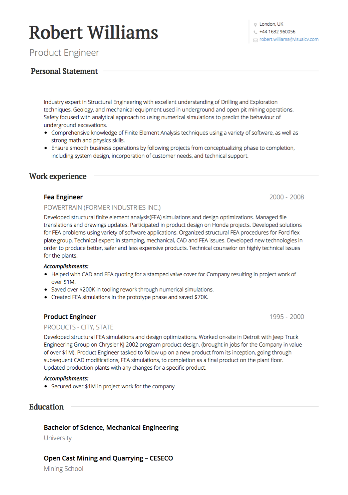

Vous cherchez un emploi au Royaume-Uni? Ce guide contient les astuces, les exemples et les exigences nécessaires pour rédiger le CV parfait au Royaume-Uni. Créez votre CV aujourd'hui!
Demander un poste au Royaume-Uni requiert un format CV spécifique. Lorsque vous cherchez du travail au Royaume-Uni, assurez-vous que votre CV est adapté à un public du Royaume-Uni et que vous attendez les recruteurs.

CV, pas CV: le terme «CV» est le plus courant au Royaume-Uni. Les termes «CV» et «curriculum vitae» sont rarement utilisés.
Langue: assurez-vous d'écrire votre CV en anglais britannique approprié - par exemple, écrire «travail» plutôt que «travailler» et «optimiser» plutôt que «optimiser».
Longueur: Votre CV au Royaume-Uni ne doit pas dépasser deux pages - “pas plus que deux côtés d'A4”, selon Rachel Swain chez Prospects.ac.uk.
Photo: Une photo n'est pas prévue sur votre CV au Royaume-Uni. Bien que commun dans le reste de l'Europe, il est rare de voir une image sur un CV au Royaume-Uni. Dans certains rôles, tels que certains postes de vente ou un travail créatif où la présentation visuelle est la clé, une image peut être acceptable, mais assurez-vous de rechercher la société d'abord.
Renseignements personnels: Les informations personnelles requises pour un CV au Royaume-Uni sont vos coordonnées - votre nom, votre adresse, votre numéro de téléphone mobile et votre adresse électronique (qui devrait être une variante de votre nom: firstname.lastname@example.com ou quelque chose de similaire) . Aucune autre information personnelle ne doit être incluse.
Déclaration personnelle: Votre CV devrait commencer par une brève description, pas plus de cinq lignes de texte, qui décrit qui vous êtes, ce que vous pouvez faire et ce que vous apportez au poste que vous postulez. Votre déclaration personnelle devrait être adaptée à la description du poste - mettez l'accent sur les compétences et l'expérience qui vous conviennent pour ce travail particulier. Les énoncés personnels ne sont pas obligatoires, mais ils sont une excellente façon d'attirer l'attention de l'employeur. Selon Michael Cheary à reed.co.uk , “un énoncé personnel bien écrit peut signifier la différence entre se démarquer de la foule et votre demande rejetée”.
Expérience de travail: affichez vos travaux précédents dans un ordre chronologique inverse , en commençant par le plus récent. Utilisez cet espace pour présenter vos réalisations dans chaque position - des étapes importantes et des données quantifiables sont plus impressionnantes que les tâches journalières. Utilisez des mots d'action proactifs pour que votre expérience semble intéressante et dynamique.
Éducation: l' éducation devrait également être répertoriée de la plus récente à la moins récente. Incluez toutes les certifications pertinentes, y compris les noms et les dates des établissements. Votre section d'éducation devrait venir après votre expérience de travail, sauf si vous êtes diplômé très récemment.
Compétences: Il est fréquent d'inclure une liste simple de compétences distinctes de votre historique de travail. Cela fournit un aperçu rapide, un coup d'oeil sur ce que vous exceller, sans trop approfondir votre expérience.
Expérience bénévole: l' expérience de bénévolat doit être notée sur votre CV. Si vous préférez, vous pouvez inclure une expérience de bénévolat dans votre section Histoire du travail, mais n'oubliez pas de préciser quand un rôle est un poste de bénévole.
Langues: n'oubliez pas de noter toutes les langues que vous maîtrisez. Ceci est particulièrement important lorsque le travail appelle plusieurs langues.
Références: il n'est pas nécessaire d'inclure des références dans votre CV. Au lieu de cela, suivez les références à un employeur séparément lorsqu'on vous le demande.
Bien que les CV dans les pays anglophones soient très similaires, chaque pays a ses propres nuances qui doivent être observées pour de meilleurs résultats. Lors de la rédaction d'un CV au Royaume-Uni, faites attention aux exigences spécifiques de chaque employeur et, si possible, demandez à quelqu'un que vous avez confiance de lire votre CV avant de soumettre votre demande.